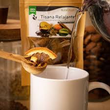
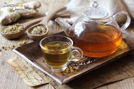
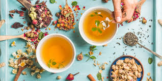
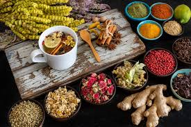

¿Quiénes Somos?
Somos un grupo de amantes del bienestar natural. Creemos en el poder de las tisanas como una forma deliciosa y saludable de cuidarte todos los días.
¿Por Qué Este Blog?
- 🌸 Compartimos secretos de infusiones naturales.
- 🌱 Sustituimos bebidas procesadas por opciones sanas.
- 🍃 Una taza puede transformar tu día.
Nuestra Misión
Inspirarte a disfrutar de una vida más sana, una taza de tisana a la vez. Queremos que descubras lo fácil que es sentirte bien con ayuda de la naturaleza.
¿Qué Encontrarás Aquí?
- ☕ Beneficios para la digestión, el sueño, la energía y más
- 🍓 Ingredientes naturales con propiedades curativas
- 🫖 Tips y recetas para preparar tus propias tisanas
- 💚 Consejos de consumo diario y bienestar integral
🌼 Galería de Tisanas 🌼

Relajante de lavanda
Hecha con lavanda y manzanilla, ideal para aliviar el estrés y mejorar el sueño.

Digestiva de menta
Mezcla de menta, anís e hinojo, alivia la hinchazón y mejora la digestión.

Energizante de jengibre
Con jengibre, cúrcuma y canela, estimula tus sentidos y da energía natural.

Infusión floral con manzanilla
Infusión suave de pétalos de rosa, manzanilla y flor de azahar, ideal para relajarte.